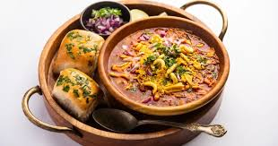

*Puran Poli*
Puran Poli is a traditional Indian sweet flatbread, especially popular in Maharashtra, featuring a soft whole wheat dough (poli) stuffed with a rich, sweet filling (puran) of cooked chana dal (split chickpeas) and jaggery, flavored with cardamom and nutmeg, and served warm with ghee during festivals like Gudi Padwa, Holi, and Diwali. It's a festive delicacy, culturally significant, and enjoyed as a main course, snack, or dessert, sometimes paired with milk or a tangy curry called Katachi Amti.

*Modak*
Modak is a traditional Indian sweet dumpling, famous as Lord Ganesha's favorite food, especially during the festival of Ganesh Chaturthi, symbolizing bliss and spiritual knowledge, featuring a soft rice flour shell filled with sweet coconut and jaggery, often steamed (Ukadiche Modak) or fried, with regional variations in ingredients and preparation, though other modern flavors exist.

*Misal*
Misal is a popular, spicy Maharashtrian dish featuring a flavorful curry of sprouted lentils (like moth beans) and spices, topped with crunchy farsan (fried mix), chopped onions, fresh coriander, and a squeeze of lemon, famously served with soft bread rolls called pav. Meaning "mixture" in Marathi, it's a hearty breakfast or snack known for its complex textures and spicy-tangy taste, with regional variations like Kolhapuri and Nashik misal.
*Vadapav*
Vada Pav is Mumbai's iconic, affordable vegetarian street food, essentially an "Indian burger" featuring a deep-fried, spiced potato patty (vada) nestled in a soft bread roll (pav), enhanced with tangy tamarind, spicy garlic, and mint chutneys, and often served with fried green chilies for a flavor explosion. Created in the 1960s for textile workers, it symbolizes Mumbai's fast-paced culture and is a beloved, quick snack for everyone from students to commuters, available at almost every street corner.